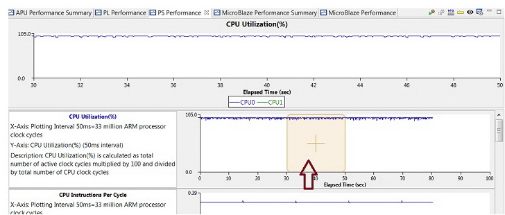

The PS Performance tab shows a graph view of the metrics displayed in
the APU Performance Summary
tab.
The graph viewing area is divided into two parts:
- The top panel shows one of the graphs selected in the bottom panel.
It enlarges the area of the timeline that is selected.
- The bottom panel shows the larger timeline. The sliding selector
frames a 20 second window that is displayed in the area above. This selector
can be moved across the timeline.
